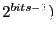
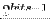

| Parameter | Variable | Description |
|---|---|---|
| Counter Length (2 |
CounterBits | Specifies the number of bits (and the final count output of . |
| Port | Dir. | Data Type | Description |
|---|---|---|---|
| en | in | ??? | Step the counter by 1 unless addr=. |
| rst | in | ??? | Reset counter to 0. |
| addr | out | ??? | Current output of the counter. |
| we | out | Boolean | Outputs boolean true just before addr is incremented. |
| done | out | Boolean | Outputs boolean true when a final en is asserted and addr=. |